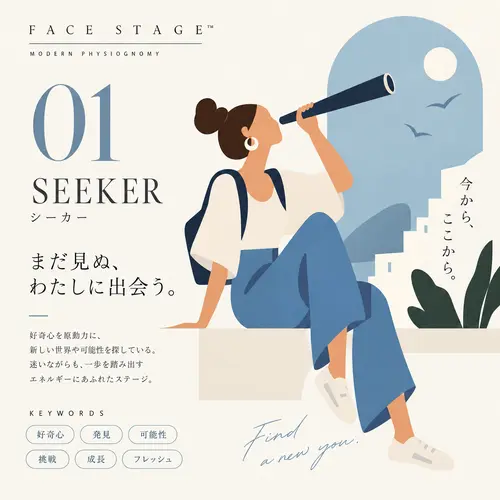
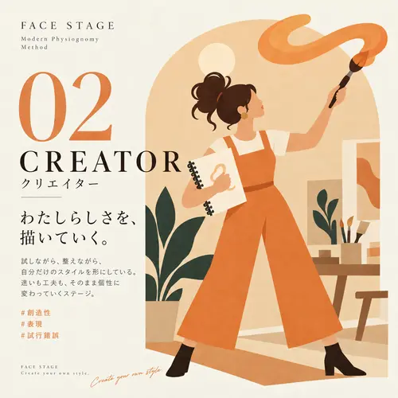
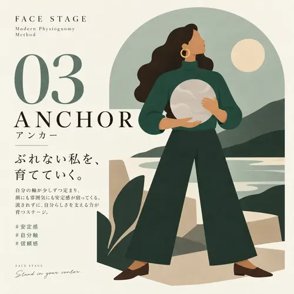
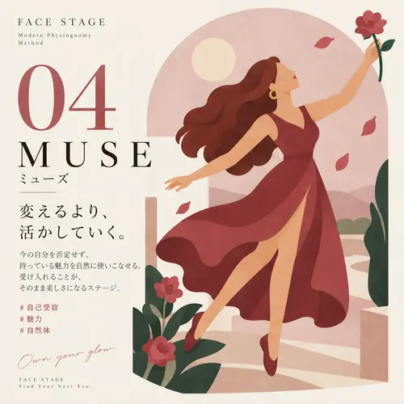
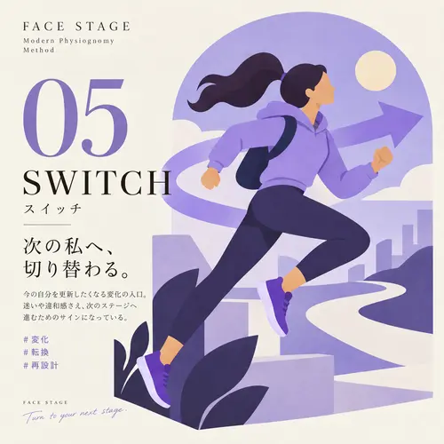
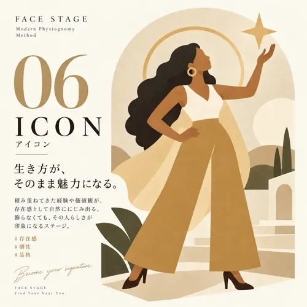

自分では気づかない魅力を知る。
自分で感じる印象と、外から伝わる印象。その違いを知り、今まで見過ごしていた強みに目を向けます。
WHY PERSONAL READING?
欠点を探すためでも、運命を決めつけるためでもありません。今の自分を、少し違う角度から理解するための個人鑑定です。
自分で感じる印象と、外から伝わる印象。その違いを知り、今まで見過ごしていた強みに目を向けます。
顔立ちだけでなく、表情や話し方なども含めて、あなたらしい印象を多面的に見つめます。※鑑定方法により対象は異なります。
個性を無理に変えるのではなく、どう活かすか。ご自身の見せ方やコミュニケーションを考える手がかりにします。
PERSONAL READING
写真から自分を知る。対話を通して深く知る。デジタルレポートで振り返る。
目的に合わせて3つの個人鑑定からお選びいただけます。
The 6 FACE STAGES
FACE STAGEは優劣や固定的な性格分類ではありません。環境・思考・経験・外見への意識によって、あなたの顔のステージは変化します。
6つのステージは、優劣をつけるためのものではありません。






The Concept
FACE STAGEは、美形かどうか、若いかどうかで人を評価しません。顔には、その人が歩んできた時間と内面が表れます。それを読み解くための視点です。
環境・思考・経験・意識によって、ステージは変化します。人生が変わればFACE STAGEも変わる。比較や欠点より、今の自分の「活かし方」を見ます。
あなたのステージを知ることは、自己批判の道具ではありません。今の自分の特徴を理解し、美容・メイク・ライフスタイルに具体的に活かすための情報です。
FACE GAP™
SELF FACEと専門家の読みの違いを表した例です。
この差分こそが、FACE GAP™。
まだ自分で気づいていない魅力や、次の変化のヒントがそこにあります。
LEARN
自己診断から始まり、専門鑑定・講座へ。目的に合わせて、あなたのペースで深めてください。
自己診断（SELF FACE）と、専門家が読むあなたの顔には、ギャップが見つかることがあります。そのギャップを知ることで、自分では気づけなかった魅力と長所が見えてきます。鑑定では現在のFACE STAGEをはじめ、世界に一人のあなたの顔の特徴・印象の読み解きをお伝えします。現代観相学の新たな人相鑑定を提供します。
3つの鑑定メニューを見る →占い的な古い人相学ではなく、人を理解してコミュニケーションに活かすのが現代観相学、フィジオノミーのコンセプトです。 講座では、現代観相学フィジオノミーの基礎理論を60分の動画と41Pのテキストでご自宅で学べます。美容のプロ・カウンセラー・コーチなど、人と向き合う仕事をされている方に特に支持されています。
動画講座はこちら →DEVELOPER
松本智子 ／ 現代観相学創始者・研究家
ニューヨークのコミュニティカレッジでコミュニケーションメディアアーツを専攻。ロンドンとパリでメイクを学びました。
メイクアップアーティスト・眉技術講師として、国内外1万人以上の顔と向き合ってきました。
顔にはその人の内面や生き方が表れると感じ、日本・中国・欧米の人相学・観相学を15年以上学びました。
古い人相学には納得できる経験則がある一方、吉凶を決めつける偏りも多いと気づきました。
私自身も50代を迎え、年齢による変化は積み重ねてきた時間の証だと感じています。
現代観相学は、運命ではなく、可能性を読み解くものです。
美醜とは違う視点で、その人だけの魅力を見つけ、活かすヒントをお伝えします。

JOURNAL / NOTE
人相学の歴史、外見と印象の関係、日々の研究から見えてきたこと。現代観相学の考察をnoteで発信しています。
FAQ
CONTACT
鑑定・講座・メディア取材・コラボレーション・講演などのご相談は、以下のフォームよりお気軽にどうぞ。
通常1営業日以内にご返信いたします。
DMでお問い合わせ受け付けています
※ 生年月日をご記載いただくと、鑑定の際にプラスの情報をお伝えできます。